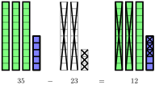
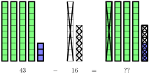
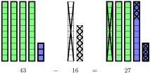
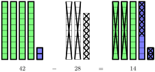
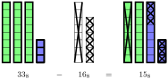

Understand what it means to "borrow" in subtraction.
Understand how subtraction can be visualized on a number line.
Develop effective strategies for mental subtraction for 2-digit and 3-digit numbers.
The first concept of subtraction that students learn is the idea of "taking away" objects from a collection. In fact, many children learn to speak the subtraction calculation \(5 - 3\) as "5 take away 3". Here is one way to represent this graphically:
Subtraction is interesting because the "taking away" step isn’t an object, but an action. We have used an X to symbolize that idea because it’s visually easy to think about the final picture with parts crossed off. But that is not to say that the X is itself an object. It doesn’t "count" towards the final tally. It is an action that is performed on the collection.
The extension of this idea is to do it with base-10 blocks. This mixes the concept of "taking away" with our method of organizing numbers.

Activity26.1.Subtraction with Base-10 Blocks.
Here’s another example, but this time we will encounter something different.

We can see that we still need to remove some unit cubes, but we don’t have any unit cubes left. So we will convert one of the rods into 10 unit cubes so that we can finish removing the pieces.

The step of converting a rod into individual unit cubes is an example of the "borrowing" step for subtraction. We reduced the number of rods by 1 and increased the number of unit cubes by 10.
Try it!
Draw a base-10 blocks diagram to represent \(42 - 28\) and compute the result.
Solution.

Just like "carrying the one," the step of "borrowing" is a bookkeeping step. When subtracting in columns, if you don’t cross out that number, you might forget that you borrowed and then make a mistake down the line. This is why the process was so heavily emphasized. But you don’t actually have to do it that way at all. There are natural ways to keep track of that information. We’re going to once again look at the number line for insight.
One way to look at subtraction on the number line is to think about movement. But while addition moved to the right, subtraction moves to the left. We will start with a diagram of \(5 - 3\text{:}\)
For small numbers, counting out the individual steps is reasonable. But for larger values, we’re going to employ an organization technique similar to what we did with addition. Here is the setup for \(53 - 28\text{:}\)
Just as before, we’re going to break this out into two steps.
Once again, by simply applying a bit of mental thought, you can determine the unknown values. The value of ? is 33 and the value of ?? is 25.
Just as "carrying the one" represented an intuition of increasing numbers, "borrowing" is a representation of an intuition of decreasing numbers. Starting from the number 33 and moving to the left, you will basically never make the mistake of somehow increasing the value to 35. Your brain can do this on its own because you have enough experience with numbers.
Activity26.2.Two-Step Subtraction on a Number Line.
Here is the full diagram for the calculation \(53 - 28\) using the number line.
Just as with addition, the framework of subtraction on the number line makes it less difficult to do mental subtraction compared to subtraction in columns. This is because you are relying on your intuition of numbers instead of having to actively remember whether you borrowed.
Draw a base-10 blocks diagram to represent \(31 - 18\) and compute the result.
2.
Draw a base-10 blocks diagram to represent \(317 - 158\) and compute the result.
3.
Think about (do not draw) the diagram you would need to represent \(36 - 19\) and compute the result from that mental picture. Did you find the visualization helpful or distracting? Explain what was helpful or distracting about the mental image for you.
Think about (do not draw) the number line diagram you would need to calculate \(42 - 26\) and compute the result from that mental picture. Do you prefer this visualization or the base-10 blocks visualization? Why?
4.
Practice your mental arithmetic by performing the following calculations.
Instead of thinking about motion, subtraction can also be thought of as a distance between numbers. Here is a diagram that shows that \(7 - 3 = 4\text{.}\)
One of the values of this idea is that the distances do not change if you shift both numbers the same amount. This can sometimes allow you to think of the calculation in a slightly different manner that makes it easier to calculate. Here are two calculations where one is just slightly shifted from the other.
What were the two calculations? Which of the two calculations was easier to do? Why?
2.
There are two reasonable ways to calculate \(201 - 149\) by shifting the values. Draw the corresponding diagrams and compute the result using both approaches. Which one was easier for you? Why?
3.
Practice your mental arithmetic by performing the following calculations.
There is a way to leverage your addition experience for doing subtraction problems. It require reframing the idea of subtraction as solving an addition algebra problem. Notice that the following two equations are equivalent to each other.
\begin{equation*}
x = 100 - 48 \qquad 48 + x = 100
\end{equation*}
The first question asks, "What is the result of subtracting 48 from 100"? The second question asks, "48 plus what number is equal to 100?" While the answers will be the same, they represent two different approaches. We will focus on the second one. Here is a diagram for that question:
Rather than trying to count down from \(b\) by the amount \(a\text{,}\) this is now about counting up from \(a\) to \(b\text{.}\) The application of this is most common when the value \(b\) is a "nice" value to work from. The reason is that it’s mentally easier to break it down into different parts using the place values as a guide. Here are two diagrams for \(100 - 48\text{,}\) each showing a different visualization:
Which of the two calculations at the bottom is more intuitive for you?
2.
Mentally apply the above method of subtraction to perform the following calculations.
In the same way that we used base-8 blocks to visualize addition in base-8, we can use it to help us perform subtraction.

Draw a blocks diagram to represent \(42_8 - 25_8\) and compute the result.
2.
Draw a blocks diagram to represent \(143_8 - 55_8\) and compute the result.
3.
Think about (but do not draw) the diagram you would need to represent \(52_8 - 33_8\) and compute the result from that mental picture.
Section26.3Deliberate Practice: Subtraction Practice
Algebra is a skill, which means it requires practice to become proficient. But it will take more than rote repetition to get there. Deliberate practice is the thoughtful repetition of a task. For each of these sections, you will be given a list of specific skills or ideas to focus on as you practice thinking through the problems.
Focus on these skills:
Do the problem mentally before drawing any part of the number line diagram.
Draw out the steps of subtracting the different place values on the number line diagram.
Instructions: Perform the given calculation mentally, then draw out a number line diagram to perform the calculation.
1.
Calculate \(48 - 23\) mentally and on a number line.
2.
Calculate \(75 - 38\) mentally and on a number line.
3.
Calculate \(62 - 15\) mentally and on a number line.
4.
Calculate \(53 - 47\) mentally and on a number line.
5.
Calculate \(61 - 28\) mentally and on a number line.
6.
Calculate \(83 - 71\) mentally and on a number line.
7.
Calculate \(48 - 29\) mentally and on a number line.
8.
Calculate \(378 - 227\) mentally and on a number line.
9.
Calculate \(283 - 149\) mentally and on a number line.
10.
Calculate \(314 - 178\) mentally and on a number line.
Section26.4Closing Ideas
In some ways, subtraction is very simple. You start with some objects and you take some away. But we have already seen that there are a number of ways of looking at how we might do this. We have used base-10 blocks (and base-8 blocks, if you did Worksheet 5) and we used the number line. But we also used the number line in several different ways. We saw subtraction as movement, subtraction as a distance, and subtraction reframed as addition.
But there’s even more to subtraction that this. What happens if you are being asked to "take away" more than what you started with?
If you try to think about how an early elementary school student might respond, the most common explanation of this is "You can’t do that!" As adults, we have other ways of thinking about this that can help us resolve the question, but it also requires a certain level of intellectual sophistication. Whatever explanation we might have is going to be more complex than just saying that you start with a collection and "take away" things from it.
All of this only goes to show that sometimes simple and easy are not synonymous. The idea of subtraction is fairly simple. But as you look deeper at it, the simplicity of it requires some rather complex ideas to fully understand. And this helps us to see the beauty of mathematics. Simple concepts can lead to complex ideas if you simply ask the right questions.
Section26.5Going Deeper: Subtraction as Displacement
In Worksheet 3 of this section, we looked at the idea of using subtraction to measure distance. We’re going to push that idea further and look at the signed distance between numbers, and see some applications of the idea.
Let’s look at the calculation \(5 - 3 = 2\text{.}\) Using motion on the number line, we can interpret this as starting at 5 and moving 3 to the left to get to 2.
However, we can get another interpretation of this by inverting the movement and turning it into a question: If we’re starting at 2 and ending up at 5, what is the movement that we must make? And by looking at the picture, we can see that we need to move 3 to the right.
Displacement is the movement from one position to another, and it can be expressed in terms of subtraction. To move from \(a\) to \(b\) the required displacement is \(b - a\text{.}\) We can check this algebraically:
This concept gets applied in a number of ways at many different levels of mathematics.
In Section 13.1, we looked at the concept of slope. The main definition we presented was purely geometric:
\begin{equation*}
m = \frac{\Delta y}{\Delta x} = \frac{\text{Rise}}{\text{Run}} = \frac{\text{The change of $y$}}{\text{The change of $x$}}
\end{equation*}
We’re going to take a closer look at this idea through the lens of displacement to understand the algebraic formula for slope.
Consider a line that is passing through the indicated points \((x_1, y_1)\) and \((x_2, y_2)\) as shown below:
Notice that both \(\Delta x\) and \(\Delta y\) can be interpreted as displacements. They describe a motion to get from one location to another. Furthermore, these two displacements are independent of each other, meaning that as we change our \(x\)-coordinate the \(y\)-coordainte is fixed, and the same is true the other way around. In fact, we can look at both of these displacements relative to the corresponding axes:
By viewing the movements in this way, we can see that we are looking at displacement on the number line, and can use the formula for displacement for each to get the algebraic formula for slope:
This formula was given in a margin comment (The Line in the Sand), but we didn’t explain it at the time because the focus was on the geometric interpretation and building basic intuition and experience. But now that we have the concept of displacement, this formula is not as mysterious.
As you continue forward in mathematics (and also science and statistics classes), you will see lots of situations where subtraction is being used to represent a quantity like acts like a displacement (though the language will vary depending on the topic). More generally, these concepts appear in vectors, which can be used to represent displacement in multiple dimensions. The following are a few examples of this. Don’t worry if you don’t understand these, as they’re not relevant to this class. But if you’ve seen them before, it will help you to put this idea into context.
The Distance Formula: The distance formula is the Pythagorean Theorem applied to points on a plane. The lengths of the two sides of the right triangle are found using the same \(\Delta x\) and \(\Delta y\) concepts that we used with slope.
Torque: Torque is the result of applying a force around a pivot point. The torque is equal to the force multiplied by the displacement from the pivot. The location of the objects is often given relative to an underlying coordinate system. In fact, it is this idea that leads to the formula for the center of mass of an object.
Deviation from the Mean: In statistics, we often want to know where a particular data point is located relative to the mean of the sample or population. Concepts like this relate the standard deviation, and correlations.
The more familiar you are with the basic structures of mathematics, the more capacity you will have for understanding mathematical applications. Instead of seeing collections of random symbols, you will start to see concepts and ideas, which will help everything make more sense.